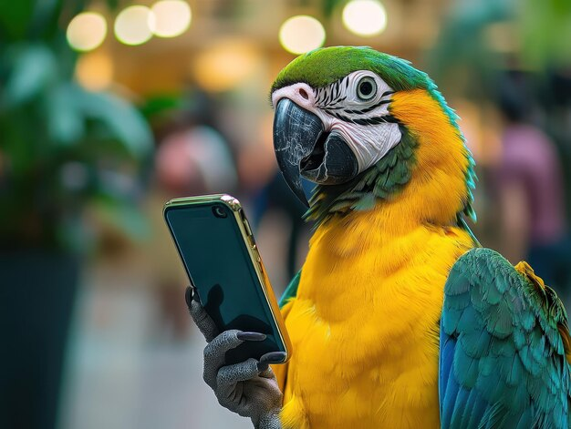

Un loro se convierte en héroe al pedir una pizza y salvar a su dueño desmayado.
Pepe, un loro extremadamente inteligente, había aprendido a usar el asistente de voz del teléfono de Carlos,
normalmente para hacerle bromas pidiendo música o encendiendo las luces.
Pero ese día, el loro superó todas las expectativas cuando pidió una pizza con pepperoni...